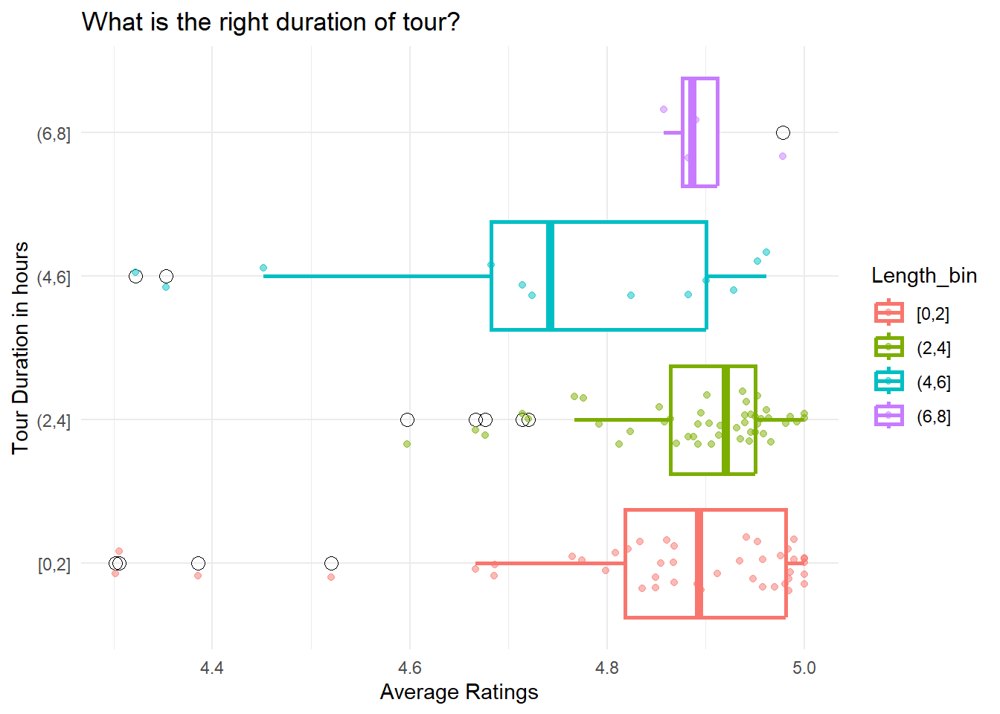
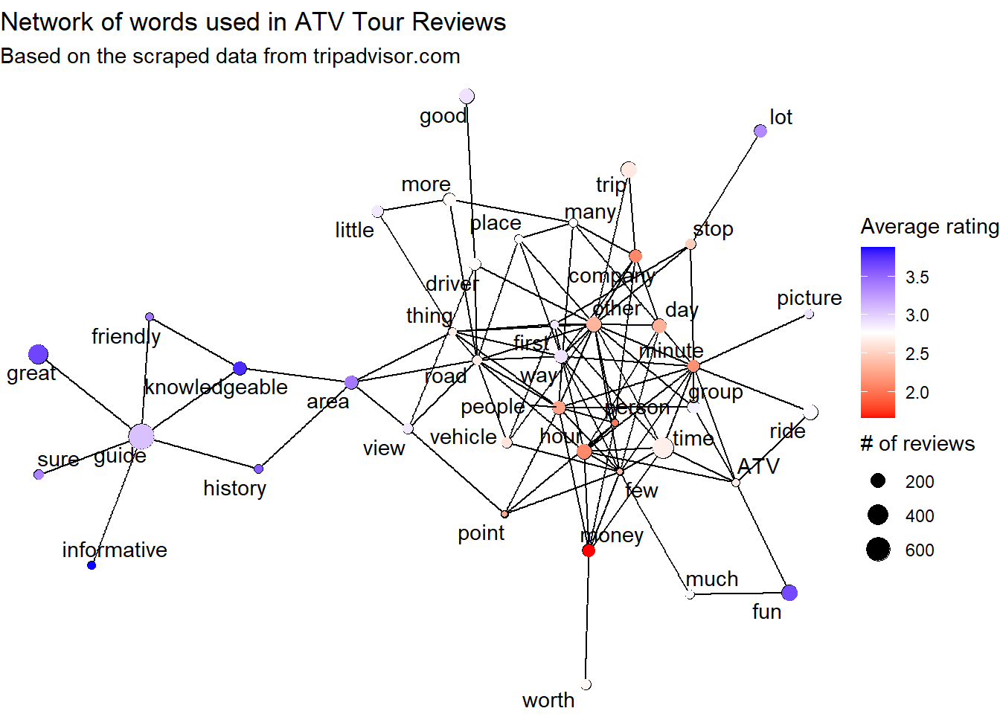

library(tidyverse)
library(tidyquant)
review_tbl <- read_rds("../00_data/data_scraped/Tour_info_review_final_tbl.rds")OHRV
Questions: What affects tour ratings?
- Description to test the tour characteristics.
- Price
- Pricing per person vs group
- Duration
- Operators
glimpse(review_tbl)Rows: 110
Columns: 10
$ Tour_names <chr> "1. Guided Hell's Revenge UTV Tour", "2. Private Washingt…
$ Review_info <list> [<data.frame[156 x 6]>], [<data.frame[169 x 6]>], [<data…
$ Description <chr> "Two person minimum to drive. A one person booking will b…
$ Price <int> 124, 495, 259, 189, 109, 95, 379, 170, 203, 149, 109, 57,…
$ Price_per <chr> "per adult", "per group", "per adult", "per adult", "per …
$ Length <chr> "2–3 hours", "4 hours", "7–8 hours", "4–5 hours", "2 hour…
$ Operators <chr> "Grand Company", "Continental City Tours", "Hawaii Island…
$ n_reviews <int> 155, 172, 210, 913, 203, 701, 299, 160, 629, 237, 1137, 8…
$ Review_links <chr> "https://www.tripadvisor.com/AttractionProductReview-g607…
$ Rankings <dbl> 1, 2, 3, 4, 6, 7, 8, 9, 10, 11, 12, 13, 14, 15, 16, 17, 1…# skimr::skim(review_tbl)
# skimr::skim(review_tbl %>% unnest(Review_info))Clean data
- length: convert minutes to hour and then convert to number
- select variables to examine: Tour_names, reviewer, review, Description, Price, Price_per, Length, Operators, tour_rating, Rankings, n_reviews
- description: two tours with the same description?
- duplicate reviews: hired by tour operators?
- tour_name: delete b/c it’s redundant
- price: convert group rates to per-person rates
review_unnested_tbl <- review_tbl %>%
# Replace group prices with NAs for lack of info on the group size
mutate(Price_per_person = if_else(Price_per == "per group", NA, Price)) %>%
# Convert all tour lengths to the hour-basis. Some are reported in minutes
mutate(Length_hour = parse_number(Length),
Length_hour = if_else(str_detect(Length, "min"), Length_hour/60, Length_hour)) %>%
# Unnest reviews
unnest(Review_info) %>%
select(Tour_names, tour_rating, Rankings, Price, Price_per_person, Price_per,
Length_hour, Operators, n_reviews, Description, reviewer, review)
# Check for duplicate reviews
review_unnested_tbl %>%
group_by(review) %>%
summarise(n_review = n()) %>%
ungroup() %>%
filter(n_review > 1) %>%
arrange(-n_review) %>%
left_join(review_unnested_tbl, by = "review") %>%
select(reviewer, n_review, review)# A tibble: 6,011 × 3
reviewer n_review review
<chr> <int> <chr>
1 <NA> 5 <NA>
2 <NA> 5 <NA>
3 <NA> 5 <NA>
4 <NA> 5 <NA>
5 <NA> 5 <NA>
6 Lichaas1 contribution 2 "#FollowDavid wa…
7 Lichaas1 contribution 2 "#FollowDavid wa…
8 Woodprakob_WanderingBirmingham, AL26 contributions 2 "1% of all visit…
9 Woodprakob_WanderingBirmingham, AL26 contributions 2 "1% of all visit…
10 IX0YE4 contributions 2 "10 out of 10 fu…
# ℹ 6,001 more rowsreview_clean_tbl <- review_unnested_tbl %>%
# Remove NAs in reviews
filter(!is.na(review)) %>%
# Remove duplicate reviews
distinct()Explore data
# skimr::skim(review_clean_tbl)
review_clean_tbl %>%
count(tour_rating)# A tibble: 5 × 2
tour_rating n
<dbl> <int>
1 1 314
2 2 213
3 3 366
4 4 1094
5 5 30868info_averaged_by_tour_tbl <- review_clean_tbl %>%
group_by(Tour_names, Price, Price_per_person, Rankings, Price_per, Length_hour, n_reviews) %>%
summarise(avg_rating = mean(tour_rating)) %>%
ungroup()
write_rds(info_averaged_by_tour_tbl, "../00_data/data_wrangled/info_averaged_by_tour_tbl.rds")Distribution of average ratings
info_averaged_by_tour_tbl %>%
ggplot(aes(avg_rating)) +
geom_histogram()
Corr between price and rating
info_averaged_by_tour_tbl %>%
ggplot(aes(Price_per_person, avg_rating)) +
geom_point(alpha = 0.3) +
geom_smooth(method = "loess", span = 1) +
theme_tq()# price per adult on avg rating
ratings_and_price_fig <- info_averaged_by_tour_tbl %>%
filter(Price_per == "per adult") %>%
mutate(Price_bin = cut_width(Price, width = 100, center = 250)) %>%
ggplot(aes(Price_bin, avg_rating, color = Price_bin)) +
geom_boxplot(size = 1, outlier.shape = 1, outlier.color = "black", outlier.size = 3) +
geom_jitter(alpha = 0.5, width = 0.2) +
coord_flip() +
theme_tq() +
scale_color_tq() +
theme(legend.position = "none") +
labs(title = "Are you charging too much?",
subtitle = "Excluded are tours priced per group.",
x = "Price Bins", y = "Average Ratings")
ratings_and_price_figwrite_rds(ratings_and_price_fig, "../00_data/fig/ratings_and_price_fig.rds")Duration and rating
info_averaged_by_tour_tbl %>%
ggplot(aes(Length_hour)) +
geom_histogram() info_averaged_by_tour_tbl %>%
ggplot(aes(Length_hour, avg_rating)) +
geom_jitter(alpha = 0.5) +
geom_smooth(method = "loess", span = 1)ratings_and_duration_fig <- info_averaged_by_tour_tbl %>%
mutate(Length_bin = cut_width(Length_hour, width = 2, center = 25)) %>%
ggplot(aes(Length_bin, avg_rating, color = Length_bin)) +
geom_boxplot(size = 1, outlier.shape = 1, outlier.color = "black", outlier.size = 3) +
geom_jitter(alpha = 0.5, width = 0.2) +
coord_flip() +
theme_minimal() +
labs(title = "What is the right duration of tour?",
x = "Tour Duration in hours", y = "Average Ratings")
ratings_and_duration_fig
write_rds(ratings_and_duration_fig, "../00_data/fig/ratings_and_duration_fig.rds")Findings
- The right duration appears to be 2-4 hours.
- The higher the price, the lower the ratings.
- It doesn’t matter whether to price it per person or group.
Although statistically insignificant, a small sample size suggests it is the case.
After conducting an analysis, several noteworthy findings have emerged. Firstly, it seems that the optimal duration for the activity falls within the range of 2 to 4 hours. This timeframe consistently yielded positive feedback and satisfaction from participants.
Secondly, a correlation has been observed between pricing and ratings, indicating that higher prices tend to result in lower ratings. While further investigation is necessary to establish a stronger statistical significance, the initial data suggests a negative relationship between price and customer satisfaction.
Lastly, an interesting observation is that the pricing structure, whether per person or per group, does not significantly impact the overall experience. This finding suggests that both pricing models are equally viable and do not significantly influence the satisfaction levels of participants.
It is important to note that these findings are based on a relatively small sample size, which limits the statistical significance of the results. Further research with a larger and more diverse sample would be beneficial in order to draw more conclusive and generalizable insights.
Correlation analysis
library(correlationfunnel)
info_averaged_by_tour_tbl %>%
filter(!is.na(Price_per_person)) %>%
mutate(avg_rating = if_else(avg_rating > 4.85, "good", "bad")) %>%
select(-Tour_names, - Rankings) %>%
binarize(n_bins = 4, thresh_infreq = 0.01) %>%
correlate(target = avg_rating__good) %>%
plot_correlation_funnel()Word correlation
library(tidytext)
library(widyr)
set.seed(2345)
review_sample <- review_unnested_tbl %>%
filter(!is.na(tour_rating)) %>%
# Generate a stratefied sample
group_by(tour_rating) %>%
sample_n(233) %>% # rating of 2 is the smallest category with 233
ungroup() %>%
# Create a unique id for reviews
mutate(review_id = row_number()) lemmatize
IDENTIFY KEY WORDS USING UDPIPE PACKAGE —- Follow along the tutorial but using tidyverse https://bnosac.github.io/udpipe/docs/doc5.html
Strengths —-
- Reduces dimensionality without stop words using the Part of Speech (POS) tagging
- Lemmatisation based on POS tagging
- Superior topic modeling with POS tagging by selecting only nouns
- Easy analysis of co-occurences and correlations between words
# review_annotated_tbl <- review_sample %>%
#
# unnest_tokens(word, review) %>%
# anti_join(stop_words, by = "word") %>%
# filter(!word %in% c("tour", "company", "recommend")) %>%
# filter(str_detect(word, "[a-z]"))
# 0 Set up ----
library(udpipe)
ud_model <- udpipe_download_model(language = "english")
ud_model <- udpipe_load_model(ud_model$file_model)
## 1.2 Annotate ----
review_annotated_tbl <- udpipe_annotate(x = review_sample$review,
doc_id = review_sample$review_id,
object = ud_model,
parallel.cores = 8) %>%
as.data.frame() %>%
tibble()
# write_rds(review_annotated_tbl,
# "../00_data/data_wrangled/review_annotated_tbl.rds")
review_annotated_tbl <- read_rds("../00_data/data_wrangled/review_annotated_tbl.rds")most frequent topics
frequent_topics_tbl <- review_annotated_tbl %>%
# Select topics from customer reviews
filter(upos %in% c("NOUN")) %>%
# Count the frequency of each topic within each review
count(lemma, doc_id, sort = T) %>%
# Count the reviews that the topic appears
count(lemma, sort = T) %>%
# Remove meaningless words
filter(!lemma %in% c("tour", "company", "trip")) %>%
head(20)
frequent_topics_fig <- frequent_topics_tbl %>%
ggplot(aes(n, fct_reorder(lemma, n))) +
geom_col(fill = "cornflowerblue") +
labs(title = "Top 20 Most Frequent Topics in Customer Reviews",
subtitle = "Removed are 'tour', 'trip', and 'company'",
x = "Number of Reviews with the Word",
y = NULL) +
scale_fill_tq() +
theme_tq() +
geom_text(aes(label = n), hjust = 1.5)
frequent_topics_figwrite_rds(frequent_topics_fig, "../00_data/fig/frequent_topics_fig.rds")review_selected_upos_tbl <- review_annotated_tbl %>%
# filter for nouns
filter(upos %in% c("NOUN", "ADJ")) %>%
mutate(doc_id = doc_id %>% as.integer()) %>%
select(review_id = doc_id, word = lemma) %>%
right_join(review_sample %>% select(-review),
by = "review_id")
review_words <- review_selected_upos_tbl %>%
group_by(word) %>%
summarise(number = n(), # simple word count
reviews = n_distinct(review_id), # word count per review
avg_rating = mean(tour_rating)) %>%
arrange(-reviews)
reviews_filtered <- review_words %>%
filter(reviews < 700, reviews > 80)
library(widyr)
word_cors <- review_selected_upos_tbl %>%
# Remove words that are too common and least frequent
semi_join(reviews_filtered, by = "word") %>%
distinct(review_id, word) %>%
pairwise_cor(word, review_id, sort = TRUE)
word_cors# A tibble: 2,162 × 3
item1 item2 correlation
<chr> <chr> <dbl>
1 area history 0.264
2 history area 0.264
3 worth money 0.236
4 money worth 0.236
5 group people 0.236
6 people group 0.236
7 hour minute 0.228
8 minute hour 0.228
9 minute other 0.215
10 other minute 0.215
# ℹ 2,152 more rowslibrary(ggraph)
library(igraph)
set.seed(1234)
filtered_cors <- word_cors %>%
head(200)
nodes <- reviews_filtered %>%
filter(word %in% filtered_cors$item1 | word %in% filtered_cors$item2)
network_of_words_in_reviews_fig <- filtered_cors %>%
graph_from_data_frame(vertices = nodes) %>%
ggraph() +
geom_edge_link() +
geom_node_point(aes(size = reviews * 1.1)) +
geom_node_point(aes(size = reviews, color = avg_rating)) +
scale_color_gradient2(high = "blue",
low = "red",
midpoint = nodes %>% summarise(median(avg_rating)) %>% pull()) +
geom_node_text(aes(label = name), repel = TRUE) +
theme_void() +
labs(color = "Average rating",
size = "# of reviews",
title = "Network of words used in ATV Tour Reviews",
subtitle = "Based on the scraped data from tripadvisor.com")
network_of_words_in_reviews_fig
write_rds(network_of_words_in_reviews_fig, "../00_data/fig/network_of_words_in_reviews_fig.rds")review_unnested_tbl %>%
filter(str_detect(review, "money")) %>%
arrange(tour_rating) %>%
select(review)# A tibble: 870 × 1
review
<chr>
1 "A waste of money, first off the guide talked for 4 1/2 hrs straight without…
2 "Booked tour 1-2020, once I realized Covid was here to stay I started to cal…
3 "Unethical, disrespectful and unprofessional. If I could give them zero or …
4 "The ATVs were nice however the trip as a whole was not. This isn’t an adren…
5 "I would never spend money on this excursion. We never got above 20 miles pe…
6 "tour goes at about a senior citizen pace dont waste your money if youre loo…
7 "This tour was not good at all, There was a lot of rules that were over bar…
8 "Went on the ATV tour and we went on some hilly and rocky areas. Going down …
9 "Dreadful! Lady who took us was in a bad mood and was rude! Also spoke to us…
10 "This experience was horrible! The only way the experience could be improve…
# ℹ 860 more rowsBased on the analysis of the ATV tour customer reviews, there are several actionable insights you can derive:
Emphasize the qualities highlighted in positive reviews: The words “great,” “friendly,” “knowledgeable,” and “informative guide” were positively associated with higher customer review ratings. This suggests that customers value these aspects of their experience. To improve customer satisfaction, prioritize hiring and training guides who possess these qualities and encourage them to engage with customers in a friendly and informative manner.
Address concerns related to money and time: The negative association of words like “money,” “hours,” and “minutes” with customer reviews suggests that customers may have had concerns about the cost and time spent during the ATV tour. To address this, consider reviewing your pricing structure to ensure it is competitive and transparent. Additionally, focus on managing customer expectations regarding the duration of the tour and provide clear information upfront about the time commitment involved.
Gather feedback on pricing and time-related aspects: In order to gain deeper insights into customers’ concerns regarding money and time, consider implementing mechanisms to collect feedback specifically related to these aspects. This could include post-tour surveys or feedback forms that specifically ask about pricing satisfaction, duration expectations, and overall value for money. Analyzing this feedback can help you identify specific areas for improvement.
Highlight positive customer experiences in marketing materials: Since words like “great,” “friendly,” and “knowledgeable” were associated with positive customer reviews, leverage these sentiments in your marketing efforts. Use customer testimonials that emphasize these qualities in your website, social media, and promotional materials. This can help potential customers gain confidence in the quality of your ATV tours.
Continuous training and monitoring of guides: Invest in ongoing training programs for your ATV tour guides to enhance their knowledge, customer service skills, and overall performance. Regularly monitor and evaluate their interactions with customers to ensure they consistently deliver a positive experience. Encourage feedback from customers to identify areas where guides can improve further.
Improve communication and transparency: To address concerns related to money and time, focus on improving communication with customers. Provide clear and transparent information about pricing, inclusions, and any additional costs involved. Clearly communicate the duration of the tour, including any potential variations, to manage customer expectations effectively.
By implementing these actionable insights, you can work towards enhancing customer satisfaction, addressing concerns, and improving the overall ATV tour experience.